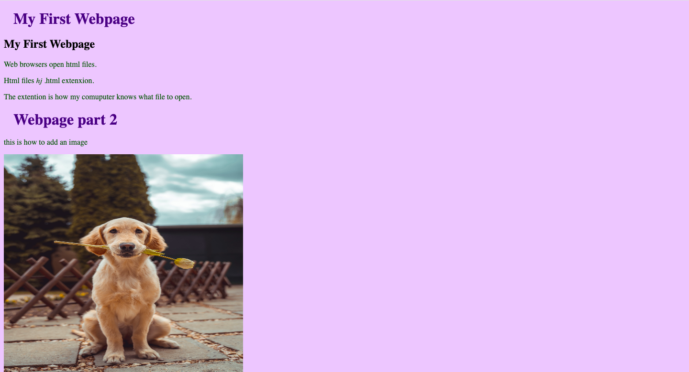

This site demonstrates the individual skills required to create a website from start to finish. It highlights my ability to plan and structure content, implement layouts with HTML and CSS, and apply design principles for a clear and engaging user experience. The project also showcases my problem-solving skills, attention to detail, and understanding of the fundamental steps involved in building a functional website.
Challenges: One of the main challenges I faced with this project was breaking down the website development process into individual skills and presenting them clearly. I had to carefully plan and organize the content so each skill was easy to understand while also creating a clean and functional layout. Paying attention to detail and ensuring consistency across the site was also a challenge, as I wanted the demonstration to be both informative and visually engaging.
What I Learned: Through this project, I learned to organize and present web development skills clearly, create consistent layouts with HTML and CSS, and pay close attention to detail to build an informative and engaging site.